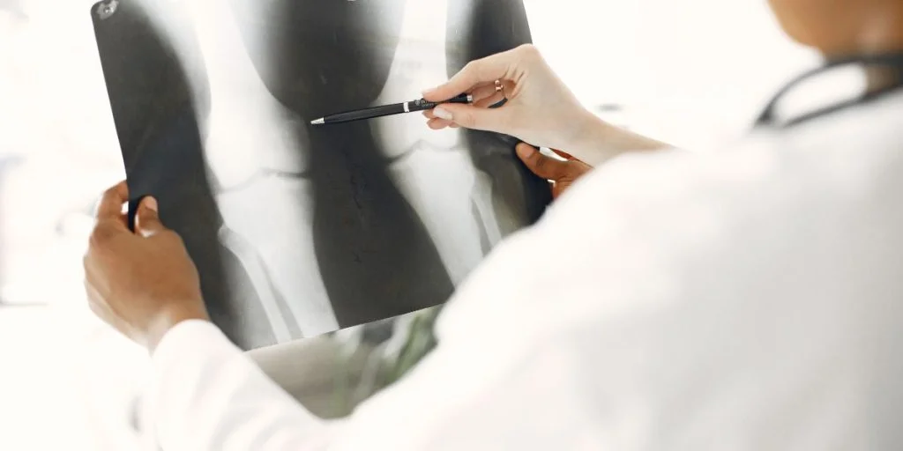

The Top Orthopedic Specialist in Hyderabad: Finding the Best Care for Your Musculoskeletal Health
Are you in search of the top orthopedic Specialist Doctors in Hyderabad? Look no further! When it comes to your musculoskeletal health, finding the right care is crucial. Hyderabad boasts a plethora of highly skilled orthopedic specialists who can provide you with the best possible treatment. From sports injuries to joint replacements, these doctors are well-equipped to address a wide range of orthopedic conditions.
With their extensive knowledge and experience, these orthopedic doctors understand the impact that musculoskeletal issues can have on your quality of life. From accurate diagnosis to personalized treatment plans, they are committed to helping you recover and get back to doing what you love.
In this article, we will guide you through the top orthopedic doctors in Hyderabad, ensuring that you find the best care for your musculoskeletal health. Whether you are seeking a second opinion or starting your treatment journey, our comprehensive list will help you make an informed decision.
Don't let pain and discomfort hold you back any longer. Discover the top orthopedic doctors in Hyderabad and take the first step towards improving your musculoskeletal health today.
Understanding Common Musculoskeletal Conditions and When to Seek Orthopedic Care
Musculoskeletal conditions encompass a wide range of disorders affecting the muscles, bones, joints, and connective tissues. Common issues include arthritis, fractures, tendonitis, and sports injuries. These conditions can arise from various causes, including aging, trauma, overuse, and certain medical conditions. Understanding these conditions is essential for recognizing when to seek professional orthopedic care.
If you're experiencing persistent pain, swelling, or limited mobility, it's crucial to consult an orthopedic specialist. Early intervention can prevent further complications and facilitate a more effective treatment plan. Symptoms such as joint stiffness, difficulty in performing daily activities, or visible deformities warrant immediate attention. Ignoring these signs may lead to chronic issues that impact your overall quality of life.
Additionally, individuals engaged in sports or physically demanding jobs should be particularly vigilant regarding musculoskeletal health. Acute injuries or chronic conditions like tendinitis can significantly hinder performance and lead to long-term damage if not addressed promptly. Therefore, having a basic understanding of common musculoskeletal conditions can empower you to take proactive steps toward your health and well-being.
Factors to Consider When Choosing an Orthopedic Specialist in Hyderabad
Choosing the right orthopedic doctor is a critical decision that can significantly influence your treatment outcomes. Several factors should be taken into account during this process. Firstly, consider the doctor's qualifications and credentials. A board-certified orthopedic surgeon with specialized training in your area of concern is often a good indicator of their expertise. Look for doctors with affiliations to reputable hospitals or medical institutions, as this can reflect their standing in the medical community.
The experience of the orthopedic doctor also plays a vital role in ensuring effective treatment. Doctors who have dealt with cases similar to yours are likely to provide more tailored care, leveraging their past experiences. Inquire about the number of procedures performed and their success rates, especially if you're considering surgical options. This information can provide insight into how well the doctor can handle your specific condition.
Another essential factor is the communication style of the orthopedic doctor. It's important to feel comfortable discussing your symptoms and concerns. A good orthopedic specialist should take the time to explain your diagnosis, treatment options, and any potential risks involved. Feeling heard and understood can enhance your trust in the doctor and contribute to a more positive healthcare experience.
Researching the Top Orthopedic Specialist in Hyderabad
Researching the top orthopedic Specialist in Hyderabad can be a rewarding endeavor if approached systematically. Start by gathering recommendations from friends, family, or your primary care physician. Personal experiences can provide valuable insights and help you narrow down your options. Additionally, online platforms and healthcare websites often feature lists of highly rated orthopedic specialists in the area, complete with patient reviews and ratings.
Utilizing social media and professional networking sites can also yield useful information. Many doctors maintain profiles that highlight their qualifications, specializations, and even patient testimonials. By exploring these resources, you can compile a list of potential doctors to consider. Pay attention to any recurring names or consistently high ratings, as these could indicate a reputable professional.
Once you have a shortlist, delve deeper into the specifics of each doctor's practice. Look for information regarding their areas of expertise, treatment philosophies, and any innovative techniques they employ. Understanding their approach can help you determine if they align with your healthcare needs and expectations. The more informed you are, the better equipped you will be to make a confident choice.
Top-Rated Orthopedic Specialist in Hyderabad: What Patients Say
Patient reviews and testimonials are invaluable tools for assessing the reputation of orthopedic doctors. Online platforms such as health forums, Google reviews, and social media can provide a glimpse into the experiences of others who have received care from a particular doctor. Look for comments regarding the doctor's communication skills, professionalism, and the effectiveness of the treatment provided. Consistently positive feedback can be a strong indicator of a doctor's ability to deliver quality care.
However, it's crucial to approach reviews with a critical mindset. While many patients share genuine experiences, some reviews may be influenced by factors unrelated to the doctor's skill. Consider the overall consensus rather than focusing on individual reviews. A balanced view will provide a more accurate representation of the doctor's capabilities and the quality of care provided.
Additionally, consider reaching out to past patients, if possible, to gain firsthand insights into their experiences. This can help you understand what to expect during your treatment journey and provide reassurance as you make your decision. Ultimately, gathering and analyzing reviews can significantly enhance your confidence in selecting the right orthopedic doctor for your needs.
Specializations and Expertise to Look for in Orthopedic Specialists
Orthopedics is a diverse field with various specializations that cater to specific conditions and treatment modalities. When seeking an orthopedic doctor, it's essential to consider their area of expertise. For instance, if you're dealing with a sports injury, a doctor specializing in sports medicine may be more suitable. They possess in-depth knowledge of athletic injuries and can provide tailored rehabilitation plans to help you return to your sport safely.
Similarly, if you require joint replacement surgery, look for an orthopedic surgeon who specializes in arthroplasty. These specialists have extensive experience in performing joint replacements and are well-versed in the latest techniques and technologies. Their specialized knowledge can significantly enhance the success rate of your procedure and improve your recovery experience.
It's also beneficial to choose an orthopedic doctor who stays updated with the latest advancements in the field. Continuous education and training allow doctors to offer innovative treatment options, such as minimally invasive surgeries or regenerative medicine techniques. By selecting a specialist with a passion for ongoing learning, you increase your chances of receiving cutting-edge care that aligns with current best practices.
Assessing the Facilities and Technology Available at Orthopedic Clinics in Hyderabad
The facilities and technology available at orthopedic clinics can greatly influence the quality of care you receive. When evaluating potential clinics, consider the availability of advanced diagnostic tools, such as MRI machines and digital X-rays. These technologies allow for accurate and timely diagnoses, ensuring that your treatment plan is based on precise information.
Moreover, the surgical facilities of the clinic are essential if surgery is a consideration. Ensure that the clinic is equipped with state-of-the-art operating rooms and adheres to stringent safety protocols. A well-equipped facility can facilitate smoother procedures and improve overall patient outcomes. Inquire about the clinic's accreditation and any affiliations with reputable hospitals, as this can indicate the level of care provided.
Additionally, the overall environment of the clinic plays a role in your treatment experience. A clean, organized, and welcoming atmosphere can contribute to a positive experience throughout your healthcare journey. Pay attention to the professionalism of the staff and the responsiveness of the clinic, as these factors can enhance your comfort and confidence in the care you receive.
Insurance Coverage and Payment Options for Orthopedic Care
Before committing to an orthopedic doctor, it's vital to understand the insurance coverage and payment options available for orthopedic care. Begin by reviewing your health insurance policy to determine which orthopedic specialists are in-network. This can significantly affect your out-of-pocket expenses and overall treatment costs. Many clinics also offer assistance in verifying insurance coverage, making it easier to navigate the financial aspects of your care.
In addition to insurance, inquire about other payment options offered by the clinic. Some practices may provide flexible payment plans, allowing you to spread the cost of treatment over time. Understanding these financial arrangements can help alleviate stress and enable you to focus on your recovery without the burden of overwhelming costs.
Furthermore, discussing the estimated costs of specific procedures or treatments with your orthopedic doctor can provide clarity. Knowing the potential financial implications of your care can assist you in making informed decisions that align with your budget. Transparency regarding costs can foster trust between you and your healthcare provider, ensuring a more collaborative approach to your treatment.
Tips for Preparing for Your First Appointment with an Orthopedic Doctor
Preparing for your first appointment with an orthopedic doctor can enhance the effectiveness of your visit. Start by compiling a comprehensive list of your symptoms, including any pain levels, duration, and activities that exacerbate the discomfort. This information will provide the doctor with a clearer understanding of your condition and help them formulate an appropriate treatment plan.
Additionally, gather any relevant medical records, including previous imaging studies, test results, and records of past treatments. Sharing this information can assist the doctor in assessing your medical history and identifying any underlying issues. If you are currently taking medications, be sure to compile a list of these as well, as they may influence your treatment options.
Lastly, prepare a list of questions you'd like to ask during your appointment. Consider inquiries about your diagnosis, treatment options, recovery times, and any lifestyle modifications you may need to implement. Having these questions written down can ensure that you address all your concerns during the visit, leading to a more productive and informative consultation.
Conclusion: Finding the Best Orthopedic Care in Hyderabad
Finding the best orthopedic care in Hyderabad is a journey that requires careful consideration and research. By understanding common musculoskeletal conditions, evaluating potential doctors, and assessing clinics' facilities, you can make informed decisions that significantly impact your health. Remember that the right orthopedic doctor can make all the difference in your recovery and overall well-being.
As you embark on this journey, stay proactive about your musculoskeletal health. Don't hesitate to seek second opinions or explore different specialists until you find the one that aligns with your needs. The combination of a qualified doctor, advanced technology, and a supportive environment can lead to successful treatment outcomes and a return to the activities you love.
Ultimately, prioritizing your health and well-being is paramount. By following the guidance outlined in this article, you can take confident steps toward finding the top orthopedic doctors in Hyderabad, ensuring that you receive the best possible care for your musculoskeletal health.
Dr. Mir Jawad Zar Khan, a senior orthopedic surgeon and the Chairman and Managing Director of Germanten Hospital, has over 25 years of experience and numerous surgeries performed. He offers the best options for non-surgical treatments. For appointments, call 9989635555 or visit Germanten Hospitals in Attapur, Hyderabad.